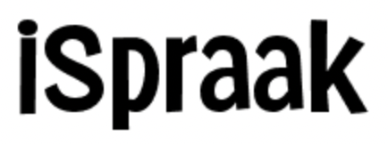

×
Home
About
Connect
Explore
☰

Help, Notes, & Troubleshooting
Below are some tips and information to help you make the best speaking activities possible. You can e-mail any questions or report odd behavior to the developer at help@ispraak.com
Selecting Texts:
Note that it is recommended that you focus on short contextualized texts. A sentence like "John picks up his mail every afternoon" is more likely to be transcribed correctly than a series of unconnected words. If your objective is to work on minimal pairs, it is also better to put these words in short contexts. For example: Paul put the
disk
in his computer on his
desk
. This is better than students just alternating the words
disk
and
desk
without any context. Also, always remember to
test your activities yourself before assigning them!
You may find some words (i.e. uncommon proper nouns) won't be transcribed as anticipated. If the transcription and text differ slightly, you can edit the text from the instructor dashboard.
Student Scoring:
Keep in mind that no speech-to-text technology is 100% accurate, even for native speakers. Because of this, consider giving your students a target goal of 80 to 90%, depending on their level and the difficulty of the sentence. iSpraak is a tool to encourage speaking practice, and is not well-suited for high-stakes evaluation. If students continue to receive low scores, you might simply encourage them to make 3 submissions per activity to demonstrate their effort.
Lengthy texts:
Speech recognition may stop transcribing an activity if a student's speech has too many errors or delays. It is recommended that the exercises you create focus on shorter texts if you experience this problem. Try limiting your text to fewer than 20 words. Remember that short texts in a clear and simple context work best!
Text-to-speech (TTS):
This is not available for all languages. As an alternative to TTS, you can upload an MP3 or record yourself reading the prompt you provide rather than rely on the synthesis.
Wildcards:
iSpraak supports the use of wildcards in the text prompts. To allow students to switch out a wildcard, simply preface and end the word with a double asterisk. For example:
My name is **name** and I am from **city**.
This will allow students to say any name and any city for the activity. Some languages might require multiple wildcards for a single idea, to allow for agreement. An example in German might be:
Ich bin dankbar für **meine** **Familie**
(I am thankful for my family) - Here "meine" will need to change as the noun that follows changes, so two wildcards are necessary.
Regions:
Some languages have multiple regional models for both ASR and TTS. As the instructor you can override the default settings to better suite your instructional context. This allows those teaching Spanish in Spain, French in Canada, or English in Australia to better align TTS and ASR to their region. These settings are adjusted in the instructor dashboard. Note that students can still change the ASR model when completing an activity, but TTS is only controlled by the instructor.
Browser Support:
iSpraak was designed to work on the desktop version of Google Chrome on Mac OS, Chromebooks, Linux, and Windows 7 or higher. While other browsers provide basic functionality for some languages, it is highly recommended that students use Google Chrome, especially for LCTLs. Avoid using Firefox, as there are several known incompatibilities with this browser for both instructor and student.
Homonyms:
Beware phonetically ambiguous statements and context-free homonyms (French: Ils marchent vs. Il marche). If you are unsure how the API will transcribe your speech (Brian or Bryan, Luc or Luke), it is a good idea to test the activity first to ensure the transcription is what you anticipated. You can adjust if necessary by editing the text from the instructor dashboard.
Punctuation:
iSpraak attempts to remove all punctuation before comparing the model text with the student submission. If you experience issues with punctuation affecting a student score, please contact us to request a fix. As a general rule of thumb, limit punctuation as much as possible to avoid this problem.
Forvo.com:
This amazing resource has the most common words and phrases in hundreds of languages. If you find, however, that a word in your own exercise is not listed in Forvo.com, you can create a free account on the website and record it yourself. It only takes a minute to register and start recording.
Segmentation:
Scriptio continua is a feature of some languages that lack spaces or other marks between one word and another. When possible, iSpraak will isolate individual words for review for these languages. However, sometimes it is necessary to to limit feedback to individual letters, phonemes, or characters.
Transliteration:
There is some transliteration support for non-Latin script languages. For Chinese, for example, students will see a pinyin icon that will provide a bubble overlay with transliterated text. In other languages, such as Russian or Greek, this button may appear as a small "ABC" icon. Contact us with inquiries about adding additional transliteration support at help@ispraak.com.
Microphone Blocked:
Please first make sure you have not inadvertently blocked the website from accessing the microphone. You can see a list of blacklisted websites by navigating here in your Chrome browser:
chrome://settings/content/microphone
If you see iSpraak in the block list, be sure to click the delete trash can icon. You will then be prompted again when you visit the website.
Activity Stats:
To check out a list of the most commonly missed words for an activity, click the stats icon from the instructor dashboard. This will give you a visual representation of the five most commonly missed words, as well as an alphabetic listing of missed words and frequency. For activities with sufficient data, you can also view Progress Stats which show trends in score improvement for a particular activity. These latter stats require that multiple students make multiple attempts on the same exercise.
Data Retention:
The activities made by instructors are retained indefinitely. Student data, however, including grades and metadata concerning missed word frequency, may no longer be accessible after a 24-month period. If you require these data, please periodically export the scores from iSpraak from the instructor dashboard.
Research:
We are very interested in classroom research that explores the impact of ASR-based tools (like iSpraak) on pronunciation instruction. If you are involved in an empirical study, we would love to hear about what you're doing. We have also crunched some numbers over the years and have shared them in aggregate
here.